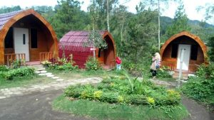
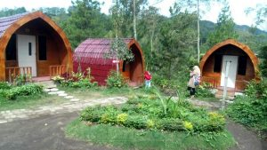

"Di Jatim Park 2 ini tempat edukasi wisata untuk anak dg berbagai macam hewan
dan wahana permainan..."
"Di Jatim Park 2 ini tempat edukasi wisata untuk anak dg berbagai macam hewan
dan wahana permainan..."
"Di Jatim Park 2 ini tempat edukasi wisata untuk anak dg berbagai macam hewan
dan wahana permainan..."
COBAN TALUN
Air terjun indah yang jatuh ke kolam alami, dikelilingi
pakis dan bebatuan di tengah hutan lebat.Hutan pinus yang terdapat di sekitar Coban Talun ini
menawarkan pemandangan yang indah dan juga asri.
Apalagi udara dan suhu yang ada di sekitar kawasan wisata ini memberikan kesegaran dengan
banyaknya pepohonan pinus dan juga kawasan hutan rimba. Apalagi dengan keindahan air terjun
atau curug yang ada di sekitar kawasan wisata ini.
 

ULASAN
"Di Jatim Park 2 ini tempat edukasi wisata untuk anak dg berbagai macam hewan dan wahana permainan..."
"Di Jatim Park 2 ini tempat edukasi wisata untuk anak dg berbagai macam hewan dan wahana permainan..."
"Di Jatim Park 2 ini tempat edukasi wisata untuk anak dg berbagai macam hewan dan wahana permainan..."